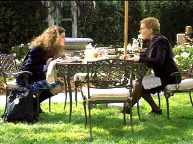

| Princess
Diaries (SE) /C,B |
|
Disney/2001/115/PS 1.33 |
Princess Diaries is extremely formulaic and
plastic. I suppose from my point of view the biggest problem is that
this insipid,
limp comedy seems to have been written for a target audience of twelve
to fourteen-year-old girls. Perhaps they could appreciate the Pygmalion/Cinderella
story on a level I could not. I suppose the target audience for this is teenage girls from twelve to fifteen.
The laughs are too few and far between and are frequently
strained.
The plot doesn't shake any new apples out of tree of
originality. Sixteen-going-on-twenty-five Amelia lives with her artist
single mother in San Francisco. She attends a cushy private school that
seems above her means. But it isn't at all, as it turns out that
Amelia's father, the heir to the throne of Genovia, foots the bills.
After her father dies, Genovian Queen Clarisse arrives on the scene
since Amelia is the last descendent of the ruling family. A grand new
choice is thrown into the ring for Amelia. And the ring is crested with
diamonds.
 |
|
Say hello to grandma. ©Disney |
The overly coy setting of
Amelia's home made me shake from a sugar overdose. When she comes
sliding down the pole in her converted firehouse residence it was chalk
screeching on a blackboard. Amelia's romantic interest with Michael Moscovitz
is likewise far too sticky. The tricks played on Amelia by the other
students at the exclusive private school are beyond belief and her gullibility
is very annoying. Certainly the Mustang scenes are unnecessary and
unfunny failing to eek out any laughs
Undoubtedly, the best character in the film is
Joseph, the head of Genovia's Security. His earliest scenes are probably
the best scenes in the film. His meeting and chauffeuring Amelia has
charming moments with by-play between Joseph and Amelia natural tot he
characters. Ultimately his character gets buried by the avalanche of
sugar crystals that buries any hope of making Princess Diaries an
entertaining comedy suitable for teens and adults as well.
Anne Hathaway is effective enough Amelia, who
undergoes the less than remarkable transformation. I even found Julie
Andrews, who I have always found very appealing, too cold and distant as
Amelia's grandmother Queen Clarisse Renaldi of Genovia. You could make a
case for Andrews' interpretation arguing for her choice, but it really
does not make sense in plot terms. It rings false. Heather
Matarazzo plays Amelia's best friend Lilly Moscovitz with far too much
eccentricity. I am sure that's the way the character is written and it's
exactly what Garry Marshall wanted from Matarazzo, but I found her to be
like a tooth ache. Marshall regular Hector Elizondo plays Joseph with a
touch of dignity.
Yes, the film has it's funny moments and there
is a measure of entertainment value. I do emphasize that it is obviously
made for a different audience than myself, though my thirteen-year-old
daughter was not exactly enthralled by the film. In the end it's script,
script, script, you needed a better script. The kernel of the idea is
fine. The execution by director Marshall is quickly paced and the
montage work moves the film along, but the script is a let-down with a
hacked out story. And, please,. what's with the stupid television writer
who lives next to Amelia. Where did they ever dig the concept for that character
out of the barrel of laughs.
There's egg on my face. I admit that I made the
mistake of purchasing the pan and scan DVD edition Princess Diaries.
Pan and scan is an abomination. Compositions are compromised. Perhaps
these are not the most artfully composed images, and at least purchasers
did a have a choice of widescreen or pan and scan DVDs of this film. It
is a very bright, upbeat transfer, effectively capturing the feeling of
San Francisco. Detail is consistently revealing. Color is very-well
saturated maintaining good color space throughout the production. Black
levels are very rich, the beach sequence is very well-lit and captured
with excellent shadow detail. Natural range of skintones is delivered.
Source material, as one would imagine from a newly made film, is
perfectly clean. No unintentional grain shows up.
Packaged as a special edition, Princess
Diaries includes a princely wealth of extras. Garrulous Garry
Marshall provides his typically funny comments on one audio track
keeping up the patter pretty much non-stop. On another track, Julie
Andrews and Anne Hathaway share their thoughts on the movie. Some
longish gaps in commentary crop up, but it's nice to share some time
with the stars. There's a behind the scenes featurette, a passel of
deleted scenes and a couple of music videos to round out the package.
|
|
|
|

Selections from the Feature
Archive include articles on Akira Kurosawa, Blonde Bimbos, Frank Darabont, Steven Culp, John Herzfeld or Vietnam: The Hollywood Pariah, and many
more....
The Bitch Brigade

A line-up of lean-lipped actresses who marched through
Hollywood in a high heeled goose step armed with razor sharp dialogue.
Click on the image to read all about them.

The Movie Poster
Archive includes extensive poster images from the films of stars like
Susan Hayward, Kirk Douglas, Katharine Hepburn and many more. Our
featured star is Susan Hayward
Annie Get Your Gun/A,A-
Irving Berlin's brilliant musical gem is polished and preserved on this
Warner DVD release. An explosion of music, song, dance and color.


An on-line Home Theater magazine with excellent hardware reviews,
including thorough and responsible research. Check it out.

The official site for information about the great comic
director. A treat for connoisseurs of classic Hollywood madcap.
 Have you
visited Home
Theater Talk lately? One of the friendliest places on the Net
for Home Theater and DVD discussion, you can get help for installation
problems or simply share your opinions with other Vidiots. Have you
visited Home
Theater Talk lately? One of the friendliest places on the Net
for Home Theater and DVD discussion, you can get help for installation
problems or simply share your opinions with other Vidiots.
DVDRAMA
One of France's outstanding DVD resources. Par le vous DVD?

ISF Monitor
Calibrations in the Tristate New York area. Lots of hardware
info and frequent hardware peaks from video expert Kevin Miller. They
may be judgmental, but that's the point, isn't it. Lots of DVD reviews
plus news and more.

Glenn Erickson's insightful DVD reviews have been a Internet fixture for
several years. Check out some of his sophisticated feature articles.
Currently hosted by DVD Talk.
|